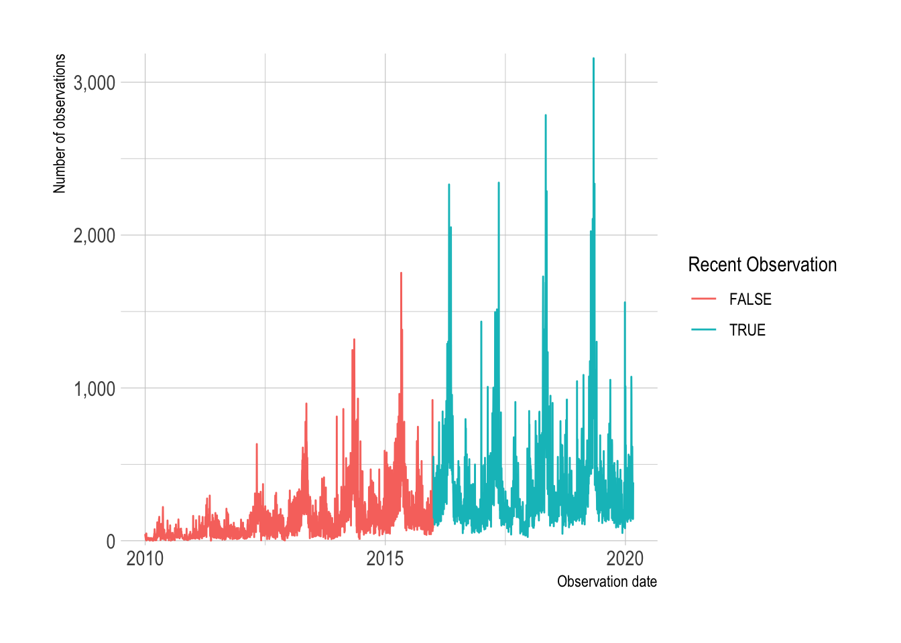

library(tidyverse)
library(lubridate)
library(vroom)
library(janitor)
library(rebird)
library(hrbrthemes)
library(ggrepel)
library(gganimate)
library(widyr)
library(tidygraph)
library(ggraph)
library(tidytext)
options(scipen = 999, digits = 2)
theme_set(theme_ipsum())
set.seed(1234)In this post I will do some exploratory analysis on eBird data. I’ve picked up birdwatching as a hobby during quarantine, and eBird has a ton of cool data on bird sightings.
Setup
Load and filter data
I downloaded data for bird sightings in Allegheny County from the eBird data portal. This code loads the data in R and prepares it for analysis.
df <- vroom("post_data/ebd_US-PA-003_201001_202003_relFeb-2020.zip", delim = "\t") %>%
clean_names() %>%
mutate_at(vars(observer_id, locality, observation_date, time_observations_started, protocol_type), str_replace_na, "NA") %>%
mutate(observation_date = ymd(observation_date),
observation_count_old = observation_count,
observation_count = as.numeric(str_replace(observation_count_old, "X", as.character(NA))),
observation_event_id = str_c(observer_id, locality, observation_date, time_observations_started)) %>%
filter(all_species_reported == 1)I will focus on the two major “types” of observation protocols. The others are related to specific birding events, and might not be representative of the overall data.
df_top_protocols <- df %>%
count(protocol_type, sort = TRUE) %>%
slice(1:2)
df_top_protocols# A tibble: 2 × 2
protocol_type n
<chr> <int>
1 Traveling 545872
2 Stationary 293991df <- df %>%
semi_join(df_top_protocols)This shows that Allegheny County birders began submitting data regularly in 2016. I will focus my analysis on recent observations.
df %>%
count(observation_date) %>%
mutate(recent_observation = year(observation_date) >= 2016,
observation_date = ymd(observation_date)) %>%
ggplot(aes(observation_date, n, color = recent_observation)) +
geom_line() +
scale_y_comma() +
scale_color_discrete("Recent Observation") +
labs(y = "Number of observations",
x = "Observation date")
df <- df %>%
filter(year(observation_date) >= 2016)There is wide variation in the number of times a species was sighted in a given observation.
df %>%
ggplot(aes(observation_count, group = common_name)) +
geom_density() +
scale_x_log10() +
labs(x = "Species count (log10)")This calculates the 99th percentile of bird count per observation, and highlights the birds that are seen in large flocks.
df %>%
group_by(common_name) %>%
summarize(observation_count_99 = quantile(observation_count, probs = c(.99), na.rm = TRUE)) %>%
arrange(desc(observation_count_99))# A tibble: 306 × 2
common_name observation_count_99
<chr> <dbl>
1 Ring-billed Gull 3400
2 crow sp. 2000
3 gull sp. 500
4 Herring Gull 248.
5 Tundra Swan 230.
6 European Starling 176.
7 Horned Lark 175
8 Bufflehead 170.
9 Canada Goose 148
10 Larus sp. 143.
# ℹ 296 more rowsThis shows that the high count of Ring-billed Gulls is explained by groups of birders seeing flocks of thousands of the species. This also highlights that the same bird sighting can be counted twice because of simultaneous observation.
df %>%
filter(common_name == "Ring-billed Gull") %>%
arrange(desc(observation_count)) %>%
slice(1:10) %>%
select(observer_id, group_identifier, common_name, observation_date, duration_minutes, observation_count, locality)# A tibble: 10 × 7
observer_id group_identifier common_name observation_date duration_minutes
<chr> <chr> <chr> <date> <dbl>
1 obsr160352 G2943178 Ring-billed G… 2018-02-13 38
2 obsr40545 G2943178 Ring-billed G… 2018-02-13 38
3 obsr40545 G2930894 Ring-billed G… 2018-02-09 50
4 obsr160352 G2930894 Ring-billed G… 2018-02-09 75
5 obsr160352 <NA> Ring-billed G… 2016-01-29 25
6 obsr160352 G1578214 Ring-billed G… 2016-01-30 71
7 obsr101818 G1578214 Ring-billed G… 2016-01-30 71
8 obsr40545 G2940041 Ring-billed G… 2018-02-12 55
9 obsr160352 <NA> Ring-billed G… 2018-02-10 55
10 obsr620338 G2940041 Ring-billed G… 2018-02-12 55
# ℹ 2 more variables: observation_count <dbl>, locality <chr>Species counts
This does a basic count of the major species, not accounting for simultaneous observation:
df_counts <- df %>%
group_by(common_name) %>%
summarize(species_count = sum(observation_count, na.rm = TRUE)) %>%
arrange(desc(species_count))
df_counts# A tibble: 306 × 2
common_name species_count
<chr> <dbl>
1 Ring-billed Gull 253373
2 American Crow 189804
3 European Starling 180456
4 American Robin 180148
5 Canada Goose 159040
6 Mallard 103066
7 Northern Cardinal 84604
8 Mourning Dove 70975
9 Blue Jay 64894
10 Song Sparrow 63571
# ℹ 296 more rowsdf_counts %>%
mutate(common_name = fct_reorder(common_name, species_count)) %>%
slice(1:20) %>%
ggplot(aes(species_count, common_name)) +
geom_col() +
scale_x_comma() +
labs(x = "Observations",
y = NULL)Species correlations
I was interested in which birds are correlated most with two common and popular birds, the Cardinal and the Blue Jay. This calculates the pairwise correlation and plots the top 10 birds correlated with the two target species:
species_list <- c("Northern Cardinal", "Blue Jay")df_pair_corr <- df %>%
pairwise_cor(common_name, observation_event_id, diag = FALSE, upper = FALSE)df_pair_corr %>%
filter(item1 %in% species_list) %>%
drop_na(correlation) %>%
arrange(item1, desc(correlation)) %>%
group_by(item1) %>%
slice(1:10) %>%
ungroup() %>%
mutate(item2 = reorder_within(x = item2, by = correlation, within = item1)) %>%
ggplot(aes(correlation, item2, fill = item1)) +
geom_col(alpha = .9) +
facet_wrap(~item1, scales = "free_y") +
scale_y_reordered() +
scale_fill_manual(values = c("blue", "red")) +
guides(fill = FALSE) +
labs(x = "Correlation",
y = NULL)Cardinals and Blue Jays share many birds in common, but there are some distinctions, and the level of correlation can vary. I use a slopegraph to show the difference in how much a bird is correlated with Blue Jays vs. Cardinals.
This grabs the data for the two target species and gets the top 20 correlated birds for each species:
df_slopegraph <- df_pair_corr %>%
filter(item1 %in% species_list) %>%
drop_na(correlation) %>%
arrange(item1, desc(correlation)) %>%
group_by(item1) %>%
slice(1:20) %>%
ungroup()This calculates the difference in correlation for each bird:
df_corr_diff <- df_slopegraph %>%
pivot_wider(names_from = item1, values_from = correlation, names_prefix = "corr_") %>%
clean_names() %>%
mutate(corr_diff = abs(corr_blue_jay - corr_northern_cardinal)) %>%
select(item2, corr_diff)
df_corr_diff# A tibble: 31 × 2
item2 corr_diff
<chr> <dbl>
1 Northern Cardinal NA
2 Red-bellied Woodpecker 0.0347
3 Tufted Titmouse 0.0142
4 Carolina Wren NA
5 Downy Woodpecker NA
6 White-breasted Nuthatch 0.00495
7 Song Sparrow 0.118
8 Northern Flicker 0.0199
9 Mourning Dove NA
10 Eastern Towhee NA
# ℹ 21 more rowsdf_slopegraph %>%
left_join(df_corr_diff) %>%
ggplot(aes(item1, correlation)) +
geom_line(aes(group = item2, color = corr_diff), size = 2) +
geom_point(size = 2) +
geom_text_repel(data = filter(df_slopegraph, item1 == species_list[2]),
aes(y = correlation, label = item2), direction = "both", nudge_x = -.3, segment.alpha = .2) +
geom_text_repel(data = filter(df_slopegraph, item1 == species_list[1]),
aes(y = correlation, label = item2), direction = "both", nudge_x = .3, segment.alpha = .2) +
scale_color_viridis_c("Absolute difference in correlation") +
labs(x = NULL,
y = "Correlation") +
theme(panel.grid.minor.y = element_blank(),
panel.grid.major.y = element_blank(),
axis.title.x = element_blank())
Network Graph
Network graphs are fun ways to show counts or correlations between groups. Since birds often exist in distinct environments and vary by season, graph analysis should be able to visualize connections.
This takes the top 100 birds in terms of total count and makes a network graph object consisting of nodes and edges.
graph_object_corr <- df_pair_corr %>%
semi_join(df_counts %>% slice(1:75), by = c("item1" = "common_name")) %>%
semi_join(df_counts %>% slice(1:75), by = c("item2" = "common_name")) %>%
as_tbl_graph(directed = FALSE) %>%
activate(nodes) %>%
filter(!node_is_isolated()) %>%
activate(edges) %>%
filter(abs(correlation) >= .05) %>%
activate(nodes) %>%
filter(!node_is_isolated()) %>%
left_join(df_counts, by = c("name" = "common_name"))
graph_object_corr# A tbl_graph: 74 nodes and 1925 edges
#
# An undirected simple graph with 1 component
#
# Node Data: 74 × 2 (active)
name species_count
<chr> <dbl>
1 American Crow 189804
2 American Goldfinch 60297
3 American Robin 180148
4 Belted Kingfisher 2754
5 Black-capped Chickadee 12379
6 Blue Jay 64894
7 Brown-headed Cowbird 8877
8 Bufflehead 5758
9 Canada Goose 159040
10 Carolina Chickadee 21862
# ℹ 64 more rows
#
# Edge Data: 1,925 × 3
from to correlation
<int> <int> <dbl>
1 1 2 0.262
2 1 3 0.259
3 2 3 0.371
# ℹ 1,922 more rowsThis plots the network graph to show all the connections that fit the criteria in the code above:
plot <- graph_object_corr %>%
ggraph() +
geom_edge_link(aes(width = correlation, alpha = correlation)) +
geom_node_point(aes(size = species_count, alpha = species_count)) +
scale_size_continuous("Total observations", labels = scales::comma) +
scale_alpha_continuous("Total observations", labels = scales::comma) +
scale_edge_alpha("Observations together", range = c(.01, .3)) +
scale_edge_width("Observations together", range = c(.1, 2)) +
theme_void()
plotThere is a dense group of birds that are highly correlated with each other. This high correlation could be caused by a shared environment or seasonal migration patterns.
Highlight species
I also wanted to be able to see where a given species fits in the network graph. This code prepares a network graph object and filters out species that are not highly connected to the main group.
graph_object_corr <- df_pair_corr %>%
as_tbl_graph(directed = FALSE) %>%
activate(edges) %>%
filter(abs(correlation) > .2) %>%
activate(nodes) %>%
mutate(centrality = centrality_authority()) %>%
filter(centrality > .01) %>%
filter(!node_is_isolated())This code identifies the node ID for the Northern Cardinal and makes a dataframe I will use to filter with in the next code chunk.
species_list <- c("Northern Cardinal")
df_species_corr_nodes <- graph_object_corr %>%
activate(nodes) %>%
as_tibble() %>%
mutate(node_id = row_number()) %>%
filter(name %in% species_list)This code identifes which node is the Northern Cardinal, and which edges connect to the Northern Cardinal. This identifies all the species that are connected to the bird, given the criteria I set above.
plot_corr <- graph_object_corr %>%
activate(nodes) %>%
mutate(name_label = case_when(name %in% species_list ~ name,
TRUE ~ as.character(NA))) %>%
activate(edges) %>%
left_join(df_species_corr_nodes, by = c("from" = "node_id")) %>%
left_join(df_species_corr_nodes, by = c("to" = "node_id")) %>%
mutate(name = coalesce(name.x, name.y),
centrality = coalesce(name.x, name.y)) %>%
select(-matches(".x|.y")) %>%
mutate(species_flag = case_when(from %in% df_species_corr_nodes$node_id | to %in% df_species_corr_nodes$node_id ~ TRUE,
TRUE ~ FALSE),
name = case_when(is.na(name) ~ "Other species",
TRUE ~ name)) %>%
ggraph() +
geom_edge_link(aes(alpha = species_flag, width = species_flag)) +
geom_node_point(aes(shape = !is.na(name_label), size = !is.na(name_label), color = name_label)) +
geom_node_label(aes(label = name_label, color = name_label), repel = TRUE) +
scale_edge_width_manual(values = c(.3, 1)) +
scale_edge_alpha_discrete(range = c(0.1, .5)) +
scale_shape_manual(values = c(1, 19)) +
scale_size_manual(values = c(2, 3)) +
guides(edge_alpha = FALSE,
edge_width = FALSE,
size = FALSE,
shape = FALSE,
color = FALSE) +
theme_void()
plot_corr